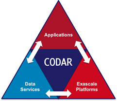

Projects
Current
 ESAMR: Enabling Scalable Analytics using Multi-precision Refactoring
ESAMR: Enabling Scalable Analytics using Multi-precision Refactoring
- Role: PI
- Lead PI: Xin Liang
- Sponsor: ORNL DRD
- Amount: $320K/year
- Period: 10/2020 - 09/2022
- Project description: The overarching goal of this project is to create a framework to enable efficient data streaming from edge devices, on-demand data retrieval from storage systems, and progressive, scalable data analytics on edge and high-performance computing (HPC) platforms. To achieve this goal, our multiprecision refactoring framework will refactor scientific data in a progressive fashion based on importance, and will be optimized on ORNL’s accelerated nodes. The framework will offer on-demand accuracy to minimize data movement, and time spent in analysis algorithms on edge and HPC resources. Although this is a general framework, we will validate its effectiveness on CNMS data generated from the scanning transmission electron microscopy and DCA++ simulation data generated on Summit. Upon success, it can be utilized at other ORNL facilities such as SNS, HFIR, and OLCF. The progressive data representation defined in this project (i.e., the refactored data) is complementary to other important ORNL initiatives such as the Federated Instrument Initiative and the Scalable Data Infrastructure for Science Initiative and can be integrated in edge systems and distributed storage infrastructures to allow for efficient and scalable data collection, storage, and sharing.
 Sirius-2: Science-driven Data Management for Multitier Storage 2.0
Sirius-2: Science-driven Data Management for Multitier Storage 2.0
- Role: Senior Personnel
- Lead PI: Scott Klasky (ORNL)
- Sponsor: DOE ASCR
- Amount: $500K/year
- Period: 10/2020 - 09/2025
- Project description: The Sirius 2 project will create the capability to enable progressive analysis. To accomplish this, we will build upon our approach that created the MultiGrid Adaptive Reduction of Data (MGARD) framework, which was a novel approach to create a hierarchy of grids to represent the original data, and then compress the grids in the hierarchy. In this project, we will map the refactored data across a multitier storage system according to the information content. This mapping will allow for both in situ and post-processing analysis methods to progressively retrieve with increasing accuracy.
 RAPIDS-2: A SciDAC Institute for Computer Science, Data, and Artifical Intelligence
RAPIDS-2: A SciDAC Institute for Computer Science, Data, and Artifical Intelligence
- Role: Senior Personnel
- Lead PI: Robert Ross (ANL)
- Sponsor: DOE ASCR
- Amount: $5.75M/year
- Period: 10/2020 - 09/2025
- Project description: The Department of Energy (DOE) has led the world in enabling large-scale high-performance computing as an indispensable tool for scientific discovery in a broad range of disciplines. Our newest generation of systems is not simply larger than past systems – it brings distinct and novel challenges. These challenges arise from the deepening of the memory hierarchy and inclusion of fast, nonvolatile storage within the HPC system; the widening ratio of peak FLOPS to I/O bandwidth; and the increasing ubiquity of computation accelerators. Moreover, the breadth of science performed on DOE advanced computing resources is growing and new motifs of investigation are emerging, including those involving experimental and observational data and artificial intelligence (AI). To address these challenges, we propose the RAPIDS2 SciDAC Institute for Computer Science, Data, and Artificial Intelligence.
- CODAR: Co-design Center for Online Data Analysis and Redcution at the Exascale
- Role: Researcher
- Lead PI: Ian Foster (ANL)
- Sponsor: DOE ECP
- Amount: $4M/year
- Period: 10/2016 - 09/2023
- Project description: By 2024, computers are expected to compute at 1018 operations per second but write to disk only at 1012 bytes/sec: a compute-to-output ratio 200 times worse than on the first petascale systems. In this new world, applications must increasingly perform online data analysis and reduction tasks that introduce algorithmic, implementation, and programming model challenges that are unfamiliar to many scientists and that have major implications for the design of various elements of exascale systems. The goal of the Center for Online Data Analysis and Reduction at the Exascale (CODAR) is to produce infrastructure for online data analysis and reduction; provide valuable abstractions for implementing and customizing data analysis and reduction methods; import, integrate, and develop essential libraries implemented using these abstractions; incorporate the libraries into scientific applications and quantify accuracy and performance; release software artifacts; construct application-oriented case studies; document success stories and the process applied to obtain them; and report on codesign trade-off investigations.
 ADIOS: Providing A Framework For Scientific Data On Exascale Systems
ADIOS: Providing A Framework For Scientific Data On Exascale Systems
- Role: Researcher
- Lead PI: Scott Klasky (ORNL)
- Sponsor: DOE ECP
- Amount: $1.5M/year
- Period: 10/2016 - 09/2023
- Project description: Exascale architectures will have complex, heterogeneous memory hierarchies, ranging from node-level caches and main memory all the way to persistent storage via the file system, that applications need to effectively achieve their science goals. At the same time, exascale applications are becoming more complex in their data flows, from multiscale and multiphysics simulations that need to exchange data between separate codes to simulations that invoke data analysis and visualization services to extract information and render it to storing simulation output to the file system for later analysis. The ADIOS project delivers a highly optimized coupling infrastructure that enables efficient synchronous and asynchronous data exchanges to move data between multiple codes running concurrently and to the different layers of the storage system.
Past
 SZ: Fast, Effective, Parallel Error-bounded Exascale Lossy Compression For Scientific Data
SZ: Fast, Effective, Parallel Error-bounded Exascale Lossy Compression For Scientific Data
- Role: Research Intern
- Lead PI: Franck Cappello (ANL)
- Sponsor: DOE ECP
- Period: 10/2016 - 09/2023
- Abstract: Long-running large-scale simulations and high-resolution, high-frequency instrument detectors are generating extremely large volumes of data at a high rate. While reliable scientific computing is routinely achieved at small scale, it becomes remarkably difficult at exascale due to both an increased number of disruptions as the machines become larger and more complex from, for example, component failures and the big data challenge. The VeloC/SZ project addresses these challenges by focusing on ensuring high reliability for long-running exascale simulations and reducing the data while keeping important scientific outcomes intact.
Publications
Refereed Conference Publications
IPDPS'21
Jieyang Chen, Lipeng Wan, Xin Liang, Ben Whitney, Qing Liu, Dave Pugmire, Nicholas Thompson, Matthew Wolf, Todd Munson, Ian Foster, and Scott Klasky.
Accelerating Multigrid-based Hierarchical Scientific Data Refactoring on GPUs.
Proceedings of the 35th IEEE International Parallel and Distributed Symposium, Portland, Oregon, May 17-21, 2021.
IPDPS'21
Jiannan Tian, Cody Rivera, Sheng Di, Jieyang Chen, Xin Liang, Dingwen Tao, and Franck Cappello.
Revisiting Huffman Coding: Toward Extreme Performance on Modern GPU Architectures.
Proceedings of the 35th IEEE International Parallel and Distributed Symposium, Portland, Oregon, May 17-21, 2021.
Cluster'20
Sihuan Li, Sheng Di, Kai Zhao, Xin Liang, Zizhong Chen, and Franck Cappello.
Towards End-to-end SDC Detection for HPC Applications Equipped with Lossy Compression.
Proceedings of the 22nd IEEE International Conference on Cluster Computing, Kobe, Japan, September 2020. Acceptance Rate: 20% (27/132)
Cluster'20
Sihuan Li, Sheng Di, Kai Zhao, Xin Liang, Zizhong Chen, and Franck Cappello.
Towards End-to-end SDC Detection for HPC Applications Equipped with Lossy Compression.
Proceedings of the 22nd IEEE International Conference on Cluster Computing, Kobe, Japan, September 2020. Acceptance Rate: 20% (27/132)
PACT'20
Jiannan Tian, Sheng Di, Kai Zhao, Cody Rivera, Megan Hickman, Robert Underwood, Sian Jin, Xin Liang, Jon Calhoun, Dingwen Tao, and Franck Cappello.
cuSZ: An Efficient GPU Based Error-Bounded Lossy Compression Framework for Scientific Data.
Proceedings of the 29th International Conference on Parallel Architectures and Compilation Techniques, Atlanta, GA, USA, October 3 - 7, 2020. Acceptance Rate: 25% (35/137)
HPDC'20
Kai Zhao, Sheng Di, Xin Liang, Sihuan Li, Dingwen Tao, Zizhong Chen, and Franck Cappello.
Significantly Improving Lossy Compression for HPC Datasets with Second- Order Prediction and Parameter Optimization.
Proceedings of the 28th ACM International Symposium on High-Performance Parallel and Distributed Computing, Stockholm, Sweden, June 23 - 26, 2020. Acceptance Rate: 22% (16/71)
PPOPP'20
Jiannan Tian, Sheng Di, Chengming Zhang, Xin Liang, Sian Jin, Dazhao Cheng, Dingwen Tao, and Franck Cappello.
waveSZ: A Hardware-Algorithm Co-Design of Efficient Lossy Compression for Scientific Data.
Proceedings of the 25th ACM SIGPLAN Symposium on Principles and Practice of Parallel Programming, San Diego, California, USA, February 22 - 26, 2020. Acceptance Rate: 23% (28/121)
PacificVis'20
Xin Liang, Hanqi Guo, Sheng Di, Franck Cappello, Mukund Raj, Chunhui Liu, Kenji Ono, Zizhong Chen and Tom Peterka.
Towards Feature Preserving 2D and 3D Vector Field Compression.
Proceedings of the 13rd IEEE Pacific Visualization Symposium, Tianjin, China, Apr 14-17, 2020. Acceptance Rate: 24% (23/96)
SC'19
Xin Liang, Sheng Di, Sihuan Li, Dingwen Tao, Bogdan Nicolae, Zizhong Chen, and Franck Cappello.
Significantly Improving Lossy Compression Quality based on An Optimized Hybrid Prediction Model.
Proceedings of the 31st ACM/IEEE International Conference for High Performance Computing, Networking, Storage and Analysis, Denver, Colorado, USA, Nov 17 - 22, 2019. Acceptance Rate: 20.9% (72/344)
SC'19
Sihuan Li, Hongbo Li, Xin Liang, Jieyang Chen, Elisabeth Giem, Kaiming Ouyang, Kai Zhao, Sheng Di, Franck Cappello, and Zizhong Chen.
FT-iSort: Efficient Fault Tolerance for Introsort.
Proceedings of the 31st ACM/IEEE International Conference for High Performance Computing, Networking, Storage and Analysis, Denver, Colorado, USA, Nov 17 - 22, 2019. Acceptance Rate: 20.9% (72/344)
Cluster'19
Xin Liang, Sheng Di, Dingwen Tao, Sihuan Li, Bogdan Nicolae, Zizhong Chen, and Franck Cappello.
Improving Performance of Data Dumping with Lossy Compression for Scientific Simulation.
Proceedings of the 2019 IEEE International Conference on Cluster Computing, Albuquerque, New Mexico USA, September 23 - 26, 2019. Acceptance Rate: 27.7% (39/141)
ICS'19
Jieyang Chen, Nan Xiong, Xin Liang, Dingwen Tao, Sihuan Li, Kaiming Ouyang, Kai Zhao, Nathan DeBardeleben, Qiang Guan, and Zizhong Chen.
TSM2: Optimizing Tall-and-Skinny Matrix-Matrix Multiplication on GPUs.
Proceedings of the 33rd ACM International Conference on Supercomputing, Phoenix, AZ, USA, June 26 - 28, 2019. Acceptance Rate: 23.3% (45/193)
HPDC'19
Sian Jin, Sheng Di, Xin Liang, Jiannan Tian, Dingwen Tao, and Franck Cappello.
DeepSZ: A Novel Framework to Compress Deep Neural Networks by Using Error-Bounded Lossy Compression.
Proceedings of the 28th ACM International Symposium on High-Performance Parallel and Distributed Computing, Phoenix, AZ, USA, June 24 - 28, 2019. Acceptance Rate: 20.7% (22/106)
BigData'18
Xin Liang, Sheng Di, Dingwen Tao, Sihuan Li, Shaomeng Li, Hanqi Guo, Zizhong Chen, and Franck Cappello.
Error-Controlled Lossy Compression Optimized for High Compression Ratios of Scientific Datasets.
Proceedings of the 2018 IEEE International Conference on Big Data, Seattle, WA, USA, December 10 - 13, 2018. Acceptance Rate: 18.9% (98/518)
BigData'18
Sihuan Li, Sheng Di, Xin Liang, Zizhong Chen, and Franck Cappello.
Optimizing Lossy Compression with Adjacent Snapshots for N-body Simulation Data.
Proceedings of the 2018 IEEE International Conference on Big Data, Seattle, WA, USA, December 10 - 13, 2018. Acceptance Rate: 18.9% (98/518)
BigData'18
Jieyang Chen, Qiang Guan,Xin Liang, Paul Bryant, Patricia Grubel, Allen Mcpherson, Li-Ta Lo, Timothy Randles, Zizhong Chen, and James Ahrens
Build and Execution Environment (BEE): an Encapsulated Environment Enabling HPC Applications Running Everywhere
Proceedings of the 2018 IEEE International Conference on Big Data, Seattle, WA, USA, December 10 - 13, 2018.
Cluster'18
Xin Liang, Sheng Di, Dingwen Tao, Zizhong Chen, and Franck Cappello.
An Efficient Transformation Scheme for Lossy Data Compression with Point-wise Relative Error Bound (best paper award in Data, Storage, and Visualization Area).
Proceedings of the 2018 IEEE International Conference on Cluster Computing, Belfast, UK, September 10 - 13, 2018. Less than 2.6% (4/154) of submissions are awarded best papers.
Cluster'18
Ali Murat Gok, Sheng Di, Yuri Alexeev, Dingwen Tao, Vladimir Mironov, Xin Liang, and Franck Cappello
PaSTRI: Error-Bounded Lossy Compression for Two-Electron Integrals in Quantum Chemistry (best paper award)
Proceedings of the 2018 IEEE International Conference on Cluster Computing, Belfast, UK, September 10 - 13, 2018.
Cluster'18
Dingwen Tao, Sheng Di, Xin Liang, Zizhong Chen, and Franck Cappello
Fixed-PSNR Lossy Compression for Scientific Data (short paper)
Proceedings of the 2018 IEEE International Conference on Cluster Computing, Belfast, UK, September 10 - 13, 2018.
SC'18
Jieyang Chen, Hongbo Li, Sihuan Li, Xin Liang, Panruo Wu, Dingwen Tao, Kaiming Ouyang, Yuanlai Liu, Qiang Guan, and Zizhong Chen.
FT-MAGMA: Fault Tolerance Dense Matrix Decomposition on Heterogeneous Systems with GPUs.
Proceedings of the 30th ACM/IEEE International Conference for High Performance Computing, Networking, Storage and Analysis, Dallas, Texas, USA, Nov 11 - 16, 2018. Acceptance Rate: 19.1% (55/288)
ICDCS'18
Jieyang Chen, Qiang Guan, Zhao Zhang, Xin Liang, Louis Vernon, Allen Mcpherson, Li-Ta Lo, Zizhong Chen, Patricia Grubel, and James Ahrens
BeeFlow : a Workflow Management System for In situ Processing Across HPC and Cloud Systems
Proceedings of the 38th IEEE International Conference on Distributed Computing Systems, Vienna, Austria, July 2-5, 2018.
HPDC'18
Dingwen Tao, Sheng Di, Xin Liang, Zizhong Chen, and Franck Cappello.
Improving Performance of Iterative Methods by Lossy Checkponting.
Proceedings of the 27th ACM International Symposium on High-Performance Parallel and Distributed Computing, Tempe, AZ, USA, June 11 - 15, 2018. Acceptance Rate: 19.6% (22/112)
SC'17
Xin Liang, Jieyang Chen, Dingwen Tao, Sihuan Li, Panruo Wu, Hongbo Li, Kaiming Ouyang, Yuanlai Liu, Fengguang Song, and Zizhong Chen.
Correcting Soft Errors Online in Fast Fourier Transform.
Proceedings of the 29th ACM/IEEE International Conference for High Performance Computing, Networking, Storage and Analysis, Denver, Colorado, USA, Nov 12 - 17, 2017. Acceptance Rate: 18.6% (61/327).
PPoPP'17
Panruo Wu, Qiang Guan, Nathan DeBardeleben, Sean Blanchard, Jieyang Chen, Dingwen Tao, Xin Liang, Sihuan Li, Kaiming Ouyang, and Zizhong Chen
Silent Data Corruption Resilient Two-sided Matrix Factorizations
Proceedings of the 22nd ACM SIGPLAN Symposium on Principles and Practice of Parallel Programming, Austin, Texas, USA, February 4 - 8 2017.
SC'16
Jieyang Chen, Li Tan, Panruo Wu, Dingwen Tao, Hongbo Li, Xin Liang, Sihuan Li, Rong Ge, Laxmi Bhuyan, and Zizhong Chen
GreenLA: Green Linear Algebra Software for GPU-Accelerated Heterogeneous Computing
Proceedings of the 28th ACM/IEEE International Conference for High Performance Computing, Networking, Storage and Analysis, Salt Lake City, Utah, USA, Nov 13 - 18, 2016.
HPDC'16
Panruo Wu, Nathan DeBardeleben, Qiang Guan, Sean Blanchard, Dingwen Tao, Xin Liang, Jieyang Chen, and Zizhong Chen
Towards Practical Algorithm Based Fault Tolerance in Dense Linear Algebra
Proceedings of the 25th ACM International Symposium on High-Performance Parallel and Distributed Computing, Kyoto, JAPAN, May 31- June 4, 2016.
HPDC'16
Dingwen Tao, Shuaiwen Leon Song, Sriram Krishnamoorthy, Panruo Wu, Xin Liang, Zheng Eddy Zhang, Darren Kerbyson, and Zizhong Chen
New-Sum: A Novel Online ABFT Scheme For General Iterative Methods
Proceedings of the 25th ACM International Symposium on High-Performance Parallel and Distributed Computing, Kyoto, JAPAN, May 31- June 4, 2016.
IPDPS'16
Jieyang Chen, Xin Liang, and Zizhong Chen.
Online Algorithm-Based Fault Tolerance for Cholesky Decomposition on Heterogeneous Systems with GPUs.
Proceedings of the 30th IEEE International Parallel & Distributed Processing Symposium, Chicago, Illinois, USA, May 23-27, 2016. Acceptance Rate: 22.98% (114/496)
HPCC'15
Teresa Davies, Xin Liang, Jieyang Chen, Zizhong Chen
Simulated Annealing to Generate Numerically Stable Real Number Error Correction Codes
Proceedings of the 2015 IEEE 17th International Conference on High Performance Computing and Communications, 2015 IEEE 7th International Symposium on Cyberspace Safety and Security, and 2015 IEEE 12th International Conf on Embedded Software and Systems, New York, USA, August 24 - 26, 2015
Refereed Workshop Publications
DRBSD-4
Xin Liang, Sheng Di, Sihuan Li, Dingwen Tao, Zizhong Chen, and Franck Cappello.
Exploring Best Lossy Compression Strategy By Combining SZ with Spatiotemporal Decimation.
Proceedings of the 4th International Workshop on Data Reduction for Big Scientific Data (DRBSD-4)@SC'18 , Dallas, Texas, USA, Nov 11 - 16, 2018.
DIDL-1
Xinyu Chen, Qiang Guan, Xin Liang, Li-Ta Lo, Simon Su, Trilce Estrada, and James Ahrens
TensorViz: Visualizing the Training of Convolutional Neural Network Using Paraview
Proceedings of the 1st Workshop on Distributed Infrastructures for Deep Learning@Middleware'17, Las Vegas, Nevada, USA, Dec 11 - 15, 2017.
Refereed Journal Publications
TPDS-SS-AI'20
Kai Zhao, Sheng Di, Sihuan Li, Xin Liang, Yujia Zhai, Jieyang Chen, Kaiming Ouyang, Franck Cappello and Zizhong Chen.
Algorithm-Based Fault Tolerance for Convolutional Neural Networks.
IEEE Transactions on Parallel and Distributed Systems Special Section on Parallel and Distributed Computing Techniques for AI, ML and DL, 2020.
TPDS'19
Dingwen Tao, Sheng Di, Xin Liang, Zizhong Chen, and Franck Cappello.
Optimizing Lossy Compression Rate-Distortion from Automatic Online Selection between SZ and ZFP.
IEEE Transactions on Parallel and Distributed Systems.
TPDS'18
Sheng Di, Dingwen Tao, Xin Liang, and Franck Cappello.
Efficient Lossy Compression for Scientific Data based on Pointwise Relative Error Bound.
IEEE Transactions on Parallel and Distributed Systems.
Conference Posters
SC'18
Sihuan Li, Sheng Di, Xin Liang, Zizhong Chen, and Franck Cappello.
Improving Error-bounded Compression for Cosmological Simulation.
Poster in 30th ACM/IEEE International Conference for High Performance Computing, Networking, Storage and Analysis, Dallas, Texas, USA, Nov 11 - 16, 2018.
SC'17
Xinyu Chen, Qiang Guan, Xin Liang, Li-Ta Lo, Trilce Estrada, and James Ahrens.
TensorViz: Visualizing the Training of Convolutional Neural Network Using Paraview.
Poster in 29th ACM/IEEE International Conference for High Performance Computing, Networking, Storage and Analysis, Denver, Colorado, USA, Nov 12 - 17, 2017.